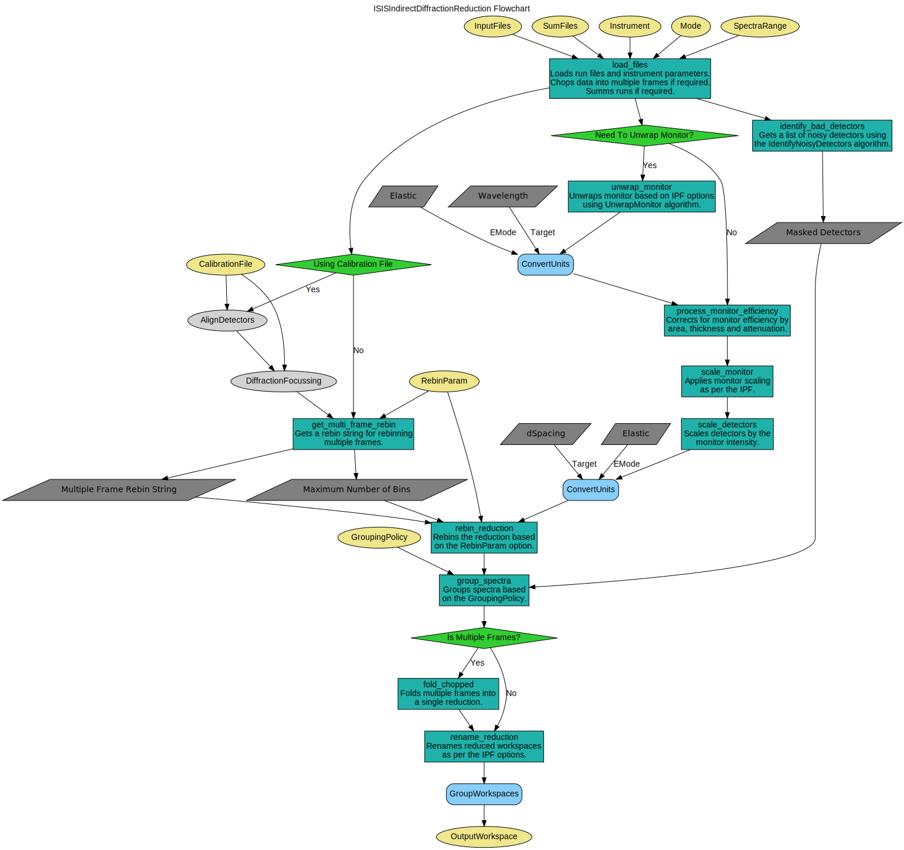

\(\renewcommand\AA{\unicode{x212B}}\)
ISISIndirectDiffractionReduction v1¶
{kind=link}
ISISIndirectDiffractionReduction dialog.¶
Summary¶
Performs a diffraction reduction for a set of raw run files for an ISIS indirect spectrometer
See Also¶
Properties¶
Name |
Direction |
Type |
Default |
Description |
|---|---|---|---|---|
InputFiles |
Input |
str list |
Comma separated list of input files formatted as a string; this can also incorporate +, -, or : in the same fashion as any string accepted by Load |
|
ContainerFiles |
Input |
str list |
Comma separated list of input files for the empty container runs formatted as a string; this can also incorporate +, -, or : in the same fashion as any string accepted by Load |
|
ContainerScaleFactor |
Input |
number |
1 |
Factor by which to scale the container runs. |
CalFile |
Input |
string |
Filename of the .cal file to use in the [[AlignDetectors]] and [[DiffractionFocussing]] child algorithms. |
|
InstrumentParFile |
Input |
string |
PAR file containing instrument definition. For VESUVIO only. Allowed extensions: [‘.dat’, ‘.par’] |
|
VanadiumFiles |
Input |
str list |
Comma separated array of vanadium runs |
|
SumFiles |
Input |
boolean |
False |
Enabled to sum spectra from each input file. |
LoadLogFiles |
Input |
boolean |
True |
Load log files when loading runs |
Instrument |
Input |
string |
IRIS |
Instrument used for run. Allowed values: [‘IRIS’, ‘OSIRIS’, ‘TOSCA’, ‘VESUVIO’] |
Mode |
Input |
string |
diffspec |
Diffraction mode used. Allowed values: [‘diffspec’, ‘diffonly’] |
SpectraRange |
Input |
long list |
Range of spectra to use. |
|
RebinParam |
Input |
string |
Rebin parameters. |
|
GroupingPolicy |
Input |
string |
All |
Selects the type of detector grouping to be used. Allowed values: [‘All’, ‘Individual’, ‘Workspace’, ‘IPF’] |
GroupingWorkspace |
Input |
Workspace containing spectra grouping. |
||
OutputWorkspace |
Output |
WorkspaceGroup |
Mandatory |
Group name for the result workspaces. |
Description¶
The generic routine used to reduce diffraction runs from indirect geometry inelastic instruments at ISIS.
Workflow¶
Usage¶
Example - Running ISISIndirectDiffractionReduction.
ISISIndirectDiffractionReduction(InputFiles='IRS21360.raw',
OutputWorkspace='DiffractionReductions',
Instrument='IRIS',
Mode='diffspec',
SpectraRange=[105,112])
ws = mtd['DiffractionReductions'].getItem(0)
print('Workspace name: {}'.format(ws.name()))
print('Number of spectra: {:d}'.format(ws.getNumberHistograms()))
print('Number of bins: {}'.format(ws.blocksize()))
Output:
Workspace name: iris21360_diffspec_red
Number of spectra: 1
Number of bins: 1934
Categories: AlgorithmIndex | Diffraction\Reduction